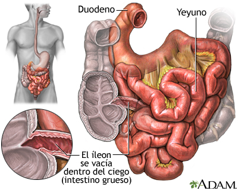

Intestino Delgado

El intestino delgado es la sección del aparato digestivo que conecta el estómago con el intestino grueso. Se dividen en tres partes: duodeno, yeyuno e íleon.
Cumple las funciones de digestión, absorción, barrera y además inmunidad.
Es uno de los órganos con mayor número de recambio de células de todo el organismo, ya que toda su superficie interna se renueva cada cinco días.
Clica aqui para saber mas
Volver
|